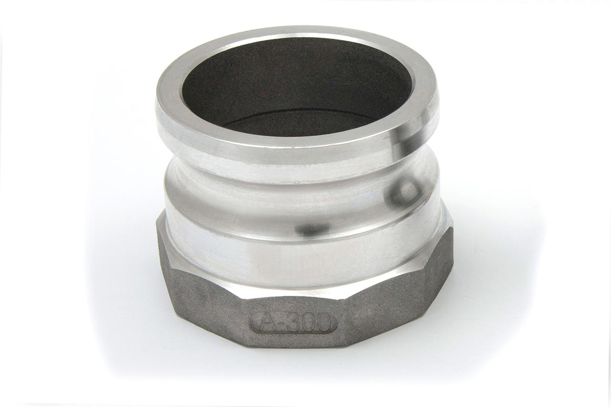

Носик быстроразъемный A-300 3" (75 мм)
Артикул: 0637
TechnoTech
Раздел: Быстроразъемные соединения (БРС) · АЗС
Цена и наличие — по запросу. Поставляем оригинал и аналоги. Доставка по России.
Модификации и размеры (6)
- Носик быстроразъемный A-300 3" (75 мм) · арт. 0637
- Носик быстроразъемный A-200 2" (50 мм) · арт. 0641
- Носик быстроразъемный F-300 3" (75 мм) · арт. 0647
- Носик быстроразъемный F-400 2" (100 мм) · арт. 0659
- Носик быстроразъемный A-400 4" (100 мм) · арт. 0665
- Носик быстроразъемный F-200 2" (50 мм) · арт. 0675
Подберём нужный вариант — уточните при запросе.
Описание
Носик быстроразъемный A-300 3" (75 мм) производства TechnoTech — позиция из раздела «Быстроразъемные соединения (БРС)» для АЗС. Компания SYNDICAT поставляет оборудование и комплектующие для автозаправочных и газозаправочных станций по всей России. Цена и наличие «Носик быстроразъемный A-300 3" (75 мм)» — по запросу: оставьте заявку или позвоните, подберём оригинал или аналог и рассчитаем доставку.